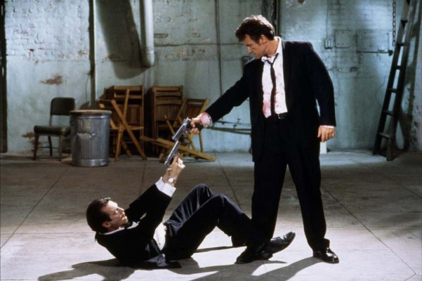
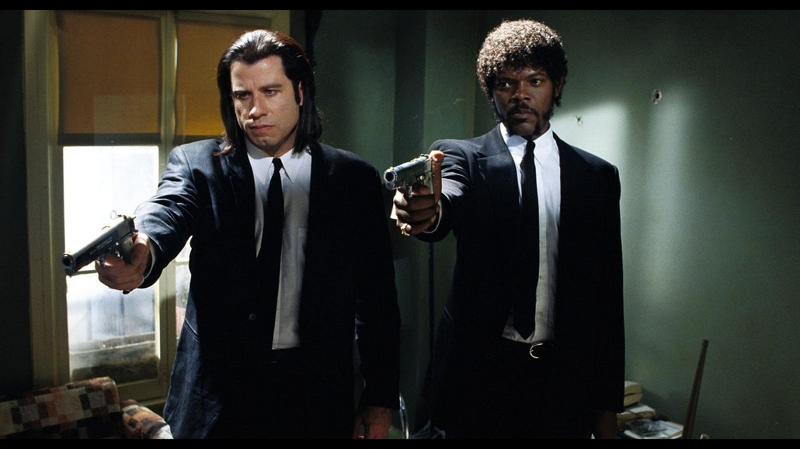

Бешеные Псы

Сюжет картины завязан на ограблении, после которого преступники собираются в назначенном месте — в заброшенном складе на окраине города — и пытаются выяснить, кто их подставил. Впервые фильм был показан 18 января 1992 года на международном кинофестивале «Сандэнс»:87, а в мае того же года участвовал в программе Каннского кинофестиваля.
Криминальное Чтиво

Сюжет фильма нелинеен, как и почти во всех остальных работах Тарантино. Этот приём стал чрезвычайно популярен, породив множество подражаний во второй половине 1990-х. В фильме рассказывается несколько историй, в которых показаны ограбления, философские дискуссии двух гангстеров, спасение девушки от передозировки героина и боксёр, которого задели за живое. Название является отсылкой к популярным в середине XX века в США pulp-журналам. Именно в стиле таких журналов были оформлены афиши, а позднее саундтрек, видеокассеты и DVD с фильмом.
Третий заголовок
Текст в третьей колонке, который содержит очень важную информацию об HTML и CSS(но это не точно).